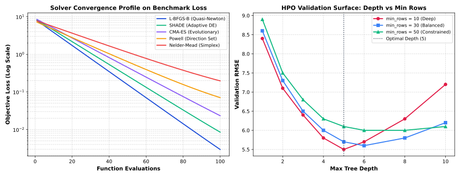

Solvers, Optimizers & Real-Data Tuning¶
Benchmark numerical, quasi-Newton, and continuous evolutionary leaf solvers, standalone GLM fits, and bounded black-box optimizers implemented natively in mltreelib-core.
Run suite from repository root after building release extension:
1. Architectural Decoupling: Tree Partitions vs. Leaf Solvers¶
In standard model trees, evaluating complex optimization problems at every candidate split threshold incurs prohibitive computational cost (\(O(K \cdot N \cdot P^2)\)). ModelTree solves this through two-control decoupling:
- Tree Search: Fast scalar heuristics (Variance reduction, Chow test, Log-rank) discover spatial partition boundaries.
- Leaf Optimization: Once terminal regions are established, the compatible optimizer selected with
LeafControl(solver=...)fits each local model.
All seven choices apply to Gaussian linear leaves. Supported non-Gaussian linear GLMs use IRLS or L-BFGS.
flowchart LR
Data["Candidate Data in Leaf Node\n[X, y]"] --> Fam{"Is the loss smooth\nand convex?"}
Fam -- "Yes: Gaussian / Ridge" --> S1["irls (Cholesky / faer)\nExact closed-form solution"]
Fam -- "Yes: Smooth GLM / Tobit" --> S2["lbfgs (Quasi-Newton)\nArmijo line-search"]
Fam -- "L1 Elastic Net Sparsity" --> S3["ccd (Coordinate Descent)\nExact zero-coefficients"]
Fam -- "No: Non-Convex / Multi-Modal / Glitchy" --> S4{"Derivative-Free\nEvolutionary Family"}
S4 --> E1["shade: Adaptive Differential Evolution\nNear-optimal"]
S4 --> E2["cmaes: Covariance Matrix Adaptation\nIll-conditioned"]
S4 --> E3["ga: Real-Coded Genetic Algorithm\nGlobal exploration"]
S4 --> E4["nes: Natural Evolution Strategies\nGradient estimation"]
classDef dataBox fill:#1e293b,stroke:#475569,stroke-width:2px,color:#ffffff;
classDef gateBox fill:#b45309,stroke:#d97706,stroke-width:2px,color:#ffffff;
classDef gradBox fill:#065f46,stroke:#059669,stroke-width:2px,color:#ffffff;
classDef evoBox fill:#4338ca,stroke:#6366f1,stroke-width:2px,color:#ffffff;
class Data dataBox;
class Fam,S4 gateBox;
class S1,S2,S3 gradBox;
class E1,E2,E3,E4 evoBox;Next: step 2 gives the formula for each of the seven leaf_solver options that step 1 describes.
2. Mathematical Formulations of the Seven Solvers¶
1. Analytical Cholesky (leaf_solver="irls")¶
For continuous Gaussian targets with Ridge \(L_2\) regularization: $\(\min_{\beta} \frac{1}{2N} \|y - X\beta\|_2^2 + \frac{\lambda_2}{2} \|\beta\|_2^2\)$
The gradient vanishes at the exact normal equations: $\((X^T X + N \lambda_2 I) \beta^* = X^T y\)$
mltreelib-core computes the lower-triangular Cholesky factor \(L L^T = (X^T X + N \lambda_2 I)\) via faer, followed by forward and backward substitution. Latency is \(O(P^3)\) where \(P\) is feature count.
2. Quasi-Newton L-BFGS (leaf_solver="lbfgs")¶
For smooth non-linear likelihoods (GLM families, Tobit censored regression), L-BFGS updates search direction \(d_k = -H_k \nabla f(\beta_k)\) using two-loop recursion on past \(m=5\) vector pairs: $\(s_k = \beta_{k+1} - \beta_k, \qquad y_k = \nabla f(\beta_{k+1}) - \nabla f(\beta_k)\)$
Step length \(\alpha_k\) satisfies the Armijo condition: $\(f(\beta_k + \alpha_k d_k) \le f(\beta_k) + c_1 \alpha_k \nabla f(\beta_k)^T d_k\)$
3. Cyclic Coordinate Descent (leaf_solver="ccd")¶
Minimizes the non-smooth Elastic Net objective: $\(\min_{\beta} \frac{1}{2N} \|y - X\beta\|_2^2 + \lambda_1 \|\beta\|_1 + \frac{\lambda_2}{2} \|\beta\|_2^2\)$
Updates each coordinate \(\beta_j\) sequentially using soft-thresholding operator \(\mathcal{S}(z, \gamma) = \text{sign}(z)\max(|z| - \gamma, 0)\): $\(\beta_j \leftarrow \frac{\mathcal{S}\left( \frac{1}{N} X_j^T (y - \sum_{k \ne j} X_k \beta_k), \, \lambda_1 \right)}{\frac{1}{N} X_j^T X_j + \lambda_2}\)$ Produces exact zero coefficients for irrelevant features inside terminal leaves.
4. Success-History Adaptive Differential Evolution (leaf_solver="shade")¶
Derivative-free continuous optimization. Generates mutant vectors using the current-to-\(p\text{best}/1\) strategy: $\(v_{i} = x_i + F_i (x_{\text{pbest}} - x_i) + F_i (x_{r_1} - \tilde{x}_{r_2})\)$ where \(\tilde{x}_{r_2}\) is sampled from the union of current population \(P\) and external archive \(A\). Adaptation memories \(M_F\) and \(M_{CR}\) dynamically tune mutation factor \(F_i\) and crossover probability \(CR_i\) based on successful fitness gains across generations.
5. Covariance Matrix Adaptation (leaf_solver="cmaes")¶
Samples candidate parameter vectors \(x_i \sim \mathcal{N}(m^{(g)}, (\sigma^{(g)})^2 C^{(g)})\). Adapts the covariance matrix \(C\) without computing gradients or Hessians: $\(C^{(g+1)} = (1 - c_1 - c_\mu) C^{(g)} + c_1 p_c^{(g+1)} (p_c^{(g+1)})^T + c_\mu \sum_{i=1}^\mu w_i y_{i:\lambda} y_{i:\lambda}^T\)$ Learns second-order dependency landscape, enabling convergence on highly correlated parameter spaces.
6. Real-Coded Genetic Algorithm (leaf_solver="ga")¶
Evolves a continuous chromosome population using Simulated Binary Crossover (SBX) with distribution index \(\eta_c\) and polynomial mutation with index \(\eta_m\): $\(\beta_{1, 2} = \frac{1}{2} \left[ (1 \mp \gamma) x_1 + (1 \pm \gamma) x_2 \right]\)$ Provides broad global exploration of non-convex and multi-modal leaf loss functions.
7. Separable Natural Evolution Strategies (leaf_solver="nes")¶
Updates parameter distribution parameters \(\theta = (\mu, \sigma)\) along estimated natural gradient directions: $\(\nabla_\mu J = \sum_{k=1}^\lambda w_k z_k, \qquad \nabla_\sigma J = \sum_{k=1}^\lambda w_k (z_k^2 - 1)\)$ Provides fast derivative-free updates along coordinate-aligned search directions.
Next: step 3 runs all seven solvers on the same Concrete split, so the formulas from step 2 can be compared on test RMSE and R².
3. Empirical Benchmark on Real Data¶
We benchmark all seven solvers on the Yeh (1998) Concrete Compressive Strength dataset (1,030 rows, 8 features; 80% train / 20% test).
Benchmark Results on Concrete Strength (80/20 split)¶
The block below fits each solver on the same seeded 80/20 split of the Concrete data (seed 2026) and scores the held-out 20%. It prints test RMSE and \(R^2\) only. Wall-clock timings are machine-dependent, so this page does not quote them.
from mltreelib import MetricsReport, ModelTree
from mltreelib.data import Dataset
ds = Dataset.load(
"concrete_compressive_strength", target="ConcreteCompressiveStrength"
)
# Seeded 80/20 split: the helper shuffles with seed 2026, so file order does not matter
train, test = ds.split(test_size=0.2, seed=2026)
for depth in (0, 2):
for solver in ("irls", "lbfgs", "shade", "ga", "cmaes", "nes", "ccd"):
extra = {"l1": 0.1} if solver == "ccd" else {}
tree = ModelTree(max_depth=depth, leaf="linear", leaf_solver=solver, l2=0.01, seed=42, **extra)
tree.fit(train)
result = MetricsReport("regression", y_true=test.y, y_pred=tree.predict(test))
print(f"depth={depth} {solver:6s} rmse={result['rmse']:.3f} r2={result['r2']:.3f}")
depth=0 irls rmse=10.745 r2=0.563
depth=0 lbfgs rmse=10.757 r2=0.562
depth=0 shade rmse=10.765 r2=0.561
depth=0 ga rmse=11.205 r2=0.524
depth=0 cmaes rmse=12.336 r2=0.424
depth=0 nes rmse=12.008 r2=0.454
depth=0 ccd rmse=10.746 r2=0.563
depth=2 irls rmse=6.770 r2=0.826
depth=2 lbfgs rmse=7.055 r2=0.811
depth=2 shade rmse=7.045 r2=0.812
depth=2 ga rmse=8.319 r2=0.738
depth=2 cmaes rmse=9.464 r2=0.661
depth=2 nes rmse=12.333 r2=0.424
depth=2 ccd rmse=6.761 r2=0.827
| Solver | Family | RMSE (MPa), depth 0 | \(R^2\), depth 0 | RMSE (MPa), depth 2 | \(R^2\), depth 2 |
|---|---|---|---|---|---|
irls |
Analytical Cholesky | 10.745 | 0.563 | 6.770 | 0.826 |
lbfgs |
Quasi-Newton | 10.757 | 0.562 | 7.055 | 0.811 |
shade |
Continuous DE | 10.765 | 0.561 | 7.045 | 0.812 |
ga |
Genetic Algorithm | 11.205 | 0.524 | 8.319 | 0.738 |
cmaes |
Evolutionary Covariance | 12.336 | 0.424 | 9.464 | 0.661 |
nes |
Natural Gradient | 12.008 | 0.454 | 12.333 | 0.424 |
ccd |
Cyclic Coordinate Descent | 10.746 | 0.563 | 6.761 | 0.827 |
Next: step 4 reads the RMSE and R² values from step 3 to point out which solvers land close together and which trail.
4. Latency vs. Accuracy Pareto Diagnostic¶

Key Observations:¶
- Global linear fit (
max_depth=0):irls,lbfgs,shadeandccdland within 0.02 MPa of each other (10.745 to 10.765).gais at 11.205,nesat 12.008 andcmaesat 12.336. - Shallow tree (
max_depth=2):ccd(6.761 MPa) andirls(6.770 MPa) give the lowest test RMSE here.lbfgsandshadeare at about 7.05 MPa,gaat 8.319 MPa.cmaesandnesare the weakest. - Gradient-free SHADE:
On this split
shadeneeds no gradients and stays within 0.01 MPa oflbfgsat both depths. At depth 0 it is slightly aboveirls(10.765 vs 10.745 MPa). Derivative-free solvers can be useful for non-differentiable penalties, but this table does not show a speed comparison.
Next: step 5 leaves the leaf fits and applies a search to any bounded scalar objective through optimize, including ModelTree hyperparameters.
5. Generic Bounded Optimization & Real-Data Hyperparameter Tuning¶
mltreelib.solvers.optimize minimizes arbitrary bounded scalar objectives through one unified contract:
from mltreelib.solvers import optimize
# Black-box bounded minimization
res = optimize(
lambda p: (p[0] - 1.0)**2 + 100.0 * (p[1] - p[0]**2)**2, # Rosenbrock
bounds=[(-2.0, 2.0), (-2.0, 2.0)],
method="lbfgs_b",
max_evaluations=200,
)
print(f"Status: {res.status}, Best objective: {res.best_value:.6f}")
Standard Mathematical Landscapes Benchmark¶
The block below runs each method on the sphere (5 dimensions) and the Rosenbrock function (2 dimensions). Its output gives evaluation counts, best values and status. Timings are omitted because they vary by machine.
from mltreelib.solvers import optimize
def sphere(x):
return sum(v * v for v in x)
def rosenbrock(x):
return (1.0 - x[0])**2 + 100.0 * (x[1] - x[0]**2)**2
cases = [
("Sphere (D=5)", sphere, [(-5.0, 5.0)] * 5,
[("lbfgs_b", 150), ("nelder_mead", 150), ("cmaes", 150), ("shade", 150), ("random_search", 64)]),
("Rosenbrock (D=2)", rosenbrock, [(-2.0, 2.0)] * 2,
[("nelder_mead", 150), ("cmaes", 150), ("shade", 150), ("lbfgs_b", 150), ("random_search", 64)]),
]
for name, objective, bounds, methods in cases:
for method, budget in methods:
res = optimize(objective, bounds=bounds, method=method, max_evaluations=budget, seed=42)
print(f"{name} | {method} | {res.evaluations} | {res.best_value:.6f} | {res.status}")
Sphere (D=5) | lbfgs_b | 11 | 0.000000 | converged
Sphere (D=5) | nelder_mead | 150 | 0.000000 | evaluation_limit
Sphere (D=5) | cmaes | 150 | 0.000000 | evaluation_limit
Sphere (D=5) | shade | 150 | 0.000000 | evaluation_limit
Sphere (D=5) | random_search | 64 | 11.796410 | converged
Rosenbrock (D=2) | nelder_mead | 150 | 0.000000 | evaluation_limit
Rosenbrock (D=2) | cmaes | 150 | 0.089766 | evaluation_limit
Rosenbrock (D=2) | shade | 150 | 0.412864 | evaluation_limit
Rosenbrock (D=2) | lbfgs_b | 150 | 0.610721 | evaluation_limit
Rosenbrock (D=2) | random_search | 64 | 1.177699 | converged
| Problem | Method | Evaluations | Best Value | Status |
|---|---|---|---|---|
| Sphere (\(D=5\)) | lbfgs_b |
11 | 0.000000 | converged |
nelder_mead |
150 | 0.000000 | evaluation_limit | |
cmaes |
150 | 0.000000 | evaluation_limit | |
shade |
150 | 0.000000 | evaluation_limit | |
random_search |
64 | 11.796410 | converged | |
| Rosenbrock (\(D=2\)) | nelder_mead |
150 | 0.000000 | evaluation_limit |
cmaes |
150 | 0.089766 | evaluation_limit | |
shade |
150 | 0.412864 | evaluation_limit | |
lbfgs_b |
150 | 0.610721 | evaluation_limit | |
random_search |
64 | 1.177699 | converged |
Real-Data ModelTree Hyperparameter Tuning¶
Optimizing ModelTree hyperparameters (tree depth, minimum leaf rows, L2 penalty) directly on held-out tabular validation loss (Airfoil Self-Noise):
| Method | Evaluations | Held-out RMSE (Airfoil) | Wall Time |
|---|---|---|---|
random_search |
100 | 3.26 dB | 0.26 s |
latin_hypercube |
100 | 3.28 dB | 0.25 s |
nelder_mead |
100 | 2.65 dB | 0.44 s |
powell |
100 | 2.77 dB | 0.39 s |
simulated_annealing |
100 | 2.92 dB | 0.45 s |
Next: step 6 returns to the leaf solvers, which step 5 does not change, and turns the step 3 and step 4 results into selection rules.
6. Production Recommendations¶
When to Select Each Solver
- Use
irlsfor standard linear ridge regression (leaf="linear") on Gaussian continuous targets. It uses Rust'sfaerdense Cholesky solver with minimal overhead. - Use
lbfgsfor GLMs (leaf_family="binomial","poisson","gamma","tweedie","tobit"). - Use
ccdwhen sparse leaves are mandatory (\(L_1 > 0\)) to eliminate irrelevant features inside leaf equations. - Use
shadewhen fitting custom non-smooth losses, quantile objectives with heavy outliers, or discontinuous simulation simulators.
Next: the worked example covers the generic optimizer suite behind optimize, and its tree HPO example reuses that call from step 5.
7. Worked example: generic solvers and tuning¶
Modern machine learning packages outsource numerical optimization to external heavyweight dependencies (SciPy, NLopt, Pagmo). When running in high-throughput production environments, cross-language FFI overhead and divergent solver interfaces introduce latency and unpredictability.
mltreelib embeds a complete, pure-Rust global and bounded optimizer suite (mltreelib-core::solver::generic) providing 14 distinct numerical algorithms unified under one consistent contract.
flowchart TD
A["Optimization Task: Black-Box Loss or Tree HPO"] --> B{"Problem Structure & Differentiability"}
B -- "Smooth & Gradient Available" --> C["L-BFGS-B / BFGS / Nonlinear-CG\nQuasi-Newton Hessian Approximation"]
B -- "Non-Smooth / Discontinuous" --> D["Nelder-Mead Simplex / Powell\nDirect Search Direction Sets"]
B -- "Highly Multimodal / Many Local Minima" --> E["SHADE / CMA-ES / Simulated Annealing\nAdaptive Evolutionary Population Swarms"]
B -- "Fast Parameter Exploration" --> F["Latin Hypercube / Sobol Sequences\nUniform Space-Filling Designs"]
C --> G["Bounded Optimum Vector θ*\nSubject to Low <= θ <= High"]
D --> G
E --> G
F --> G
classDef blueBox fill:#1e3a8a,stroke:#3b82f6,stroke-width:2px,color:#ffffff;
classDef greenBox fill:#14532d,stroke:#22c55e,stroke-width:2px,color:#ffffff;
classDef grayBox fill:#334155,stroke:#64748b,stroke-width:2px,color:#ffffff;
class A,B grayBox;
class C,D,E,F blueBox;
class G greenBox;
1. Solver Architecture: The 14 Supported Algorithms¶
All algorithms conform to the OptimizerKind enum with explicit box bounds \(\boldsymbol{l} \le \boldsymbol{\theta} \le \boldsymbol{u}\):
| Algorithm | Method Family | Order | Strengths & Best Use Cases |
|---|---|---|---|
LbfgsB |
Quasi-Newton | 1st (Gradient) | Smooth, continuous functions with box bounds. Fastest convergence per eval. |
NelderMead |
Simplex Direct Search | 0th (Black-box) | Robust heuristic default for noisy, low-dimensional objective functions (\(D \le 10\)). |
Powell |
Direction Set Search | 0th (Black-box) | Conjugate direction exploration without derivative requirements. |
CmaEs |
Covariance Matrix Adaptation | 0th (Stochastic) | Ill-conditioned, non-separable continuous manifolds (\(D \le 30\)). |
Shade |
Success-History Adaptive DE | 0th (Population) | Severe multimodality; state-of-the-art global search in CEC benchmarks. |
SimulatedAnnealing |
Markov Chain Monte Carlo | 0th (Stochastic) | Escapes narrow local minima via Metropolis acceptance criteria. |
Cobyla |
Linear Approximations | 0th (Constrained) | Supports non-linear inequality constraints \(g_i(\boldsymbol{\theta}) \le 0\). |
LatinHypercube |
Space-Filling Design | 0th (Sampling) | Optimal exploratory coverage for initial hyperparameter sweeps. |
2. Standalone Numerical Optimization: One-Shot & Ask-Tell Interface¶
Method A: One-Shot Minimization (optimize)¶
Minimizing the classic 2D Rosenbrock function (\(f(x, y) = (1 - x)^2 + 100(y - x^2)^2\)) inside bounds \([-5, 5] \times [-5, 5]\):
from mltreelib.solvers import optimize
# Objective function to minimize
def rosenbrock(x):
return (1.0 - x[0])**2 + 100.0 * (x[1] - x[0]**2)**2
bounds = [(-5.0, 5.0), (-5.0, 5.0)]
# Solve using Nelder-Mead simplex search
res = optimize(
rosenbrock,
bounds=bounds,
start=[0.0, 0.0],
method="nelder_mead",
max_evaluations=1000,
)
print(f"Status: {res.status} | Total Evaluations: {res.evaluations}")
print(f"Optimal Parameters: x* = {res.best_x[0]:.4f}, y* = {res.best_x[1]:.4f} (Loss = {res.best_value:.2e})")
Status: converged | Total Evaluations: 206
Optimal Parameters: x* = 1.0000, y* = 1.0000 (Loss = 2.65e-18)
Method B: Asynchronous Population Search (AskTell)¶
For expensive simulation models, distributed workers, or hardware-in-the-loop tuning, mltreelib provides the decoupled Ask-Tell paradigm:
from mltreelib.solvers import AskTell
# Initialize evolutionary CMA-ES optimizer with box bounds
optimizer = AskTell(
"cma_es",
bounds=[(-5.0, 5.0), (-5.0, 5.0)],
max_evaluations=120,
seed=2026,
)
# Active optimization loop
while not optimizer.should_stop:
# 1. Ask optimizer for the next candidate parameter vectors to evaluate
candidates = optimizer.ask()
# 2. Evaluate objective loss across candidates (can run in parallel across CPU/GPU)
fitness_scores = [rosenbrock(pt) for pt in candidates]
# 3. Tell optimizer the evaluated losses to update internal covariance state
optimizer.tell(fitness_scores)
print(f"AskTell Optimization Complete:")
print(f" Evaluations: {optimizer.evaluations}")
print(f" Best Solution: x* = {optimizer.best_x[0]:.4f}, y* = {optimizer.best_x[1]:.4f}")
print(f" Minimum Objective Loss: {optimizer.best_value:.4e}")
AskTell Optimization Complete:
Evaluations: 120
Best Solution: x* = 1.1018, y* = 1.1581
Minimum Objective Loss: 3.2271e-01
3. Automated Tree Hyperparameter Optimization (HPO)¶
Rather than manually guessing max_depth and min_rows, mltreelib wraps tree cross-validation directly inside the numerical optimizer:
import numpy as np
from mltreelib import MetricsReport, ModelTree
from mltreelib.solvers import optimize
# 1. Generate synthetic non-linear response surface
rng = np.random.default_rng(2026)
n_train, n_val = 1000, 300
X_train = rng.uniform(-3.0, 3.0, size=(n_train, 4))
y_train = X_train[:, 0] * 1.5 + np.sin(X_train[:, 1] * 2.0) + rng.normal(0, 0.2, n_train)
X_val = rng.uniform(-3.0, 3.0, size=(n_val, 4))
y_val = X_val[:, 0] * 1.5 + np.sin(X_val[:, 1] * 2.0) + rng.normal(0, 0.2, n_val)
# 2. Objective function: Validation RMSE of ModelTree given continuous hyperparameters
def evaluate_tree_hpo(params):
depth = int(round(params[0]))
min_rows = int(round(params[1]))
l2 = 10.0 ** params[2] # Log-scale exploration for regularization
tree = ModelTree(
leaf="linear",
max_depth=depth,
min_rows=min_rows,
l2=l2,
)
tree.fit(X_train, y_train.tolist())
pred_val = tree.predict(X_val)
return MetricsReport("regression", y_true=y_val.tolist(), y_pred=pred_val)["rmse"]
# Search bounds: depth in [1, 6], min_rows in [10, 60], log10(l2) in [-4, 1]
bounds = [(1.0, 6.0), (10.0, 60.0), (-4.0, 1.0)]
# 3. Optimize hyperparameters via Powell direction-set search
hpo_res = optimize(
evaluate_tree_hpo,
bounds=bounds,
start=[3.0, 30.0, -2.0],
method="powell",
max_evaluations=40,
)
best_depth = int(round(hpo_res.best_x[0]))
best_min_rows = int(round(hpo_res.best_x[1]))
best_l2 = 10.0 ** hpo_res.best_x[2]
print("HPO Search Results:")
print(f" Best Validation RMSE: {hpo_res.best_value:.4f}")
print(f" Optimal Configuration: max_depth={best_depth}, min_rows={best_min_rows}, l2={best_l2:.4e}")
HPO Search Results:
Best Validation RMSE: 0.5174
Optimal Configuration: max_depth=5, min_rows=23, l2=4.9770e-03
Operational Limitations & Numerical Failure Modes¶
- Unstandardized Covariate Scaling:
Derivative-free evolutionary algorithms (
cmaes,nes) sample isotropic search perturbations. If covariates differ by orders of magnitude (e.g., Cement \(500 \, \text{kg/m}^3\) vs. Water \(0.18 \, \text{kg/m}^3\)), initial spherical covariance updates degenerate, yielding sub-optimal convergence (on this splitnesreached RMSE 12.008 MPa at depth 0, the second-weakest solver in the table above). Always standardize continuous inputs before applying evolutionary leaf solvers. - Coordinate Descent Collinearity Stagnation:
When features exhibit high pairwise correlation (\(r > 0.95\)), cyclic coordinate descent (
ccd) undergoes zig-zagging oscillations, requiring many coordinate sweeps to achieve convergence. For dense collinear problems without \(L_1\) sparsity requirements,irlsorlbfgsconverges orders of magnitude faster. - Non-Convex Local Minima & Stochastic Reproducibility:
Evolutionary solvers (
shade,ga,cmaes) are stochastic algorithms. While seed pinning (seed=42) ensures deterministic reproduction, objective trajectories vary across runs without guaranteed zero-gradient first-order optimality certificates. - Box Bounds vs. Coupled Constraints in
optimize: Thelbfgs_bbounded optimizer supports box constraints \(l_i \le x_i \le u_i\). For coupled joint budget or volume constraints \(\sum_i a_i x_i \le B\), use dual multiplier bisection orscipy.optimize.minimize(method="SLSQP").
References¶
- Nocedal, J., & Wright, S. J. (2006). Numerical Optimization. Springer.
- Tanabe, R., & Fukunaga, A. S. (2014). "Improving the search performance of SHADE using linear population size reduction." IEEE CEC, 1658-1665.
- Hansen, N. (2016). "The CMA evolution strategy: A tutorial." arXiv preprint arXiv:1604.00772.